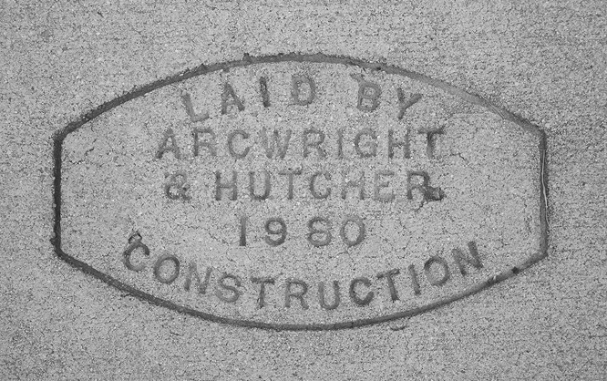

Walking around my neighborhood is a simple pleasure. Recently I started noticing stamps in the sidewalks. Not new ones though, most of them are quite old. I’m drawn to their utilitarian design, which is no accident. Sans-serif type and bold, simple shapes are favored because the designs are stamped into wet concrete. Delicate details and ornamentation won’t hold up well, especially over the years. Beyond the stamp’s aesthetic appeal, they also tell the history of a neighborhood, which is why I think they’re worth collecting and archiving.
Want to contribute to this archive?
Please email pictures of sidewalk stamps you’ve found in
your own neighborhood!
chris@vonburske.design

Oldest Stamp
1952
Newest Stamp
2010